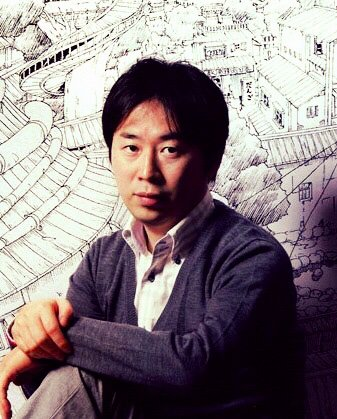

Master of Anime
Masashi Kishimoto

Ha llevado una vida extraordinaria, llevando alegrías a las personas en todo el mundo
Su arte es conocido por niños, jovenes y adultos en todo el mundo, con proyectos como Naruto, Naruto Shippuden y el mas reciente Boruto , todos estos proyectos son una obra de arte en el anime.
Go to the Bio